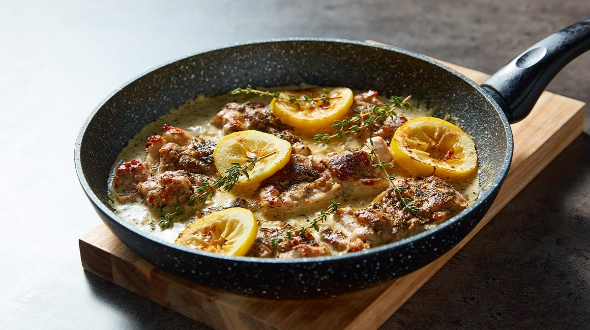

Recipes
Creamy Lemon and Thyme Chicken

Description
Tender, golden-seared chicken breasts simmered in a luxuriously creamy
sauce infused with fresh thyme, zesty lemon, and a hint of garlic. Each
bite balances the brightness of citrus with the comforting richness of
cream, creating a dish that’s both elegant and heartwarming. Perfectly
paired with mashed potatoes, rice, or buttery noodles, this dish delivers
a burst of fresh flavor in every mouthful.
Ingredients
2 tsp. fresh thyme
2 tsp. mixed herbs
Salt & pepper to taste
6 boneless, skinless chicken thighs
1 tbsp. oil
1 onion chopped
2 garlic cloves chopped
Juice of 1 lemon
100ml chicken stock
200ml crème fraiche
Lemon slices
Fresh thyme
Method
-
First, prepare the seasoning by mixing the fresh thyme, mixed herbs,
salt, and pepper in a little bowl. Sprinkle generously over your chicken
thighs, making sure to coat evenly, and keep any remaining seasoning to
the side to use later.
-
Next, add the oil to a large pan over a medium heat. Once hot, add your
chicken thighs and cook for several minutes on each side. They should be
crispy and browned on the outside, and completely cooked through on the
inside (with no pink bits). Remove the chicken from the pan and set
aside.
-
In the same pan as you cooked the chicken, add the onion and garlic and
cook for a few minutes until softened. Then add the lemon juice, chicken
stock, and any of the remaining seasoning mix, stir well to combine, and
allow to bubble for a few minutes.
-
Add the crème fraiche, stir through, and cook for another 2-3 minutes to
thicken. Then add the chicken thighs back into the pan and allow to heat
up for a few minutes.
-
Remove from the heat and garnish with fresh lemon slices and a sprinkle
of thyme. Serve up with quinoa and enjoy immediately or portion up for
your meal prep for the week. Delicious.
Tips
Boneless chicken thighs work just as well as breasts and stay extra juicy.
For an added burst of flavor, stir a handful of baby spinach or a few
sun-dried tomatoes into the sauce before serving.